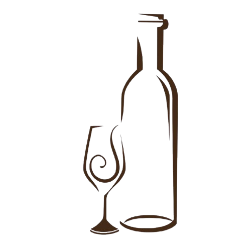

Tradição
Uma empresa familiar atuando há mais de 15 anos no mercado de vinhos.
Tradição e Experiência
A vinheria Agnello é uma empresa familiar que atua há mais de 15 anos oferecendo vinhos nacionais e importados, com atendimento especializado para você.
Conheça nossos vinhos
Uma empresa familiar atuando há mais de 15 anos no mercado de vinhos.
Atendimento realizado por profissionais que conhecem as características dos produtos.
Vinhos nacionais e importados selecionados para diferentes preferências.